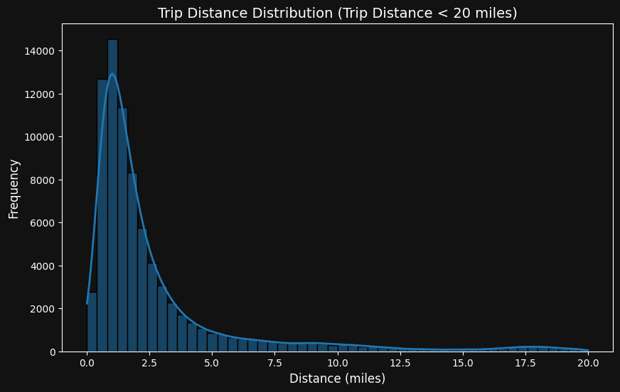
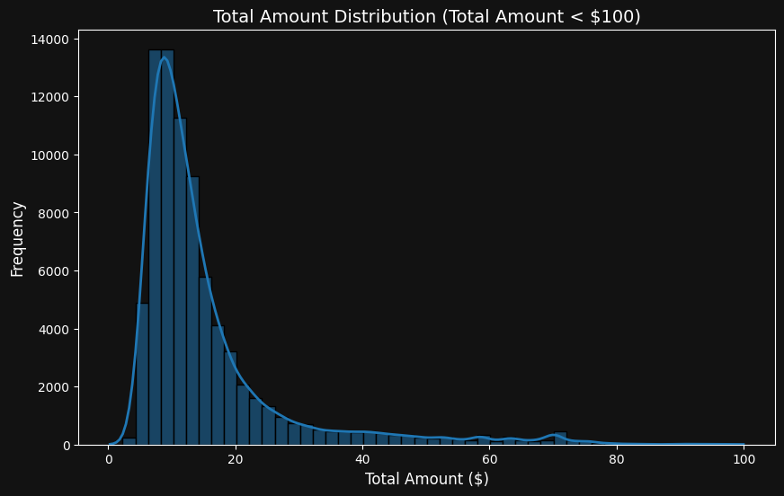
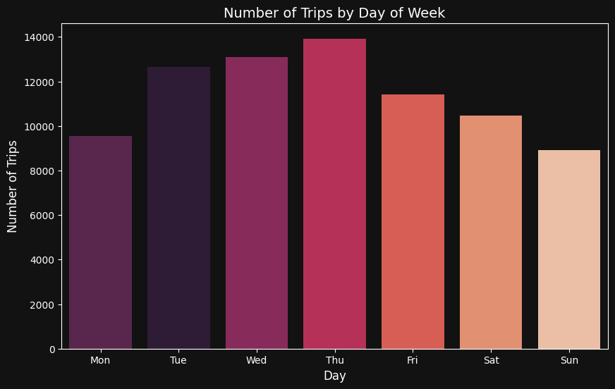
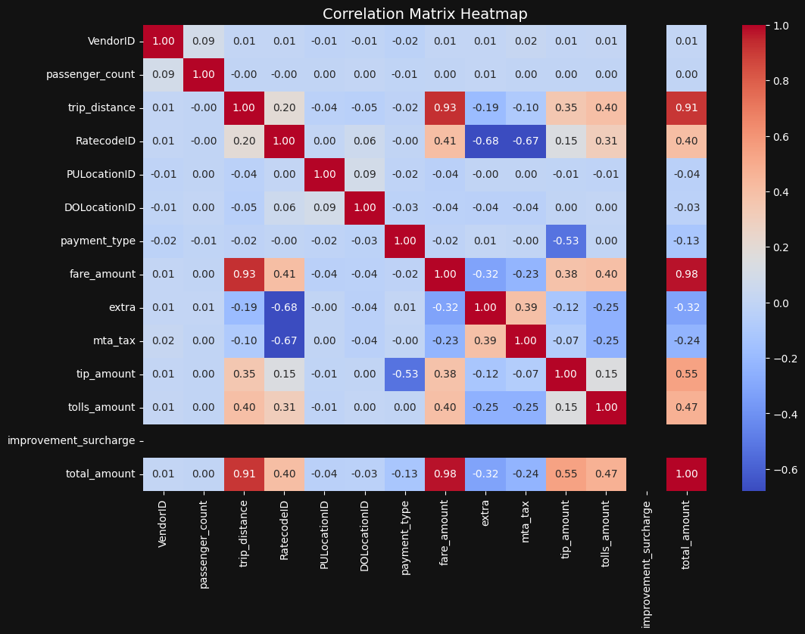
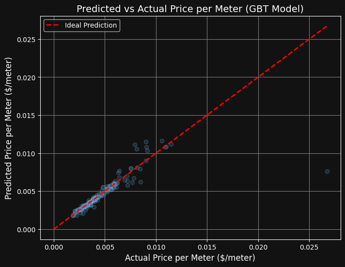
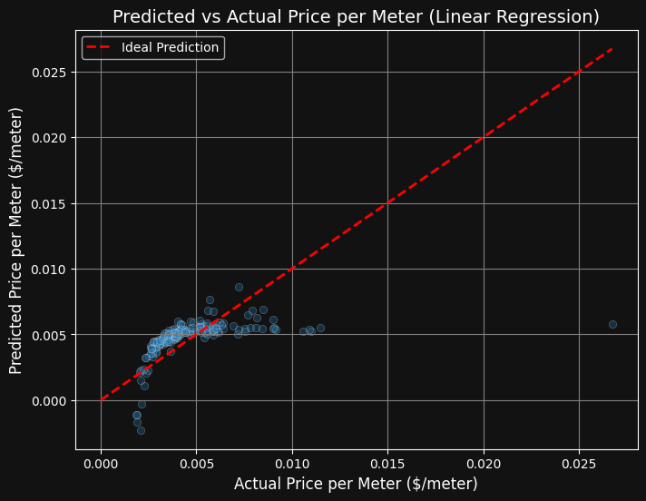

Big Data Analytics and ML Fare Prediction for NYC Taxi Data
Predicting fare amounts using big data pipelines and machine learning models trained on millions of taxi trip records.
Hardware & Tech Stack
Skills & Competencies
Project Overview
Predicting taxi fares accurately helps both riders and fleet operators estimate costs efficiently. Using the massive NYC Taxi & Limousine Commission (TLC) Dataset, this project applies Big Data techniques to clean, process, and perform exploratory data analysis (EDA), followed by training predictive machine learning models.
Key Objectives
1. Process large-scale taxi trip records efficiently.
2. Perform Exploratory Data Analysis (EDA) to uncover distribution patterns and correlations.
3. Develop and evaluate regression models to predict total fare amounts accurately based on trip distance.
Data Processing & ML Pipeline
The Spark execution workflow structures raw dataset loading, cleaning, feature engineering, and model training in parallel across computational clusters.
Exploratory Data Analysis (EDA)
Analysis performed on the dataset reveals trip behaviour, pricing trends, correlations, and frequency distributions. Below is the visual and numerical overview derived from millions of NYC taxi trip records.

Trip Distance Distribution
A highly right-skewed distribution indicating most taxi rides are short (0-5 miles), representing the density of urban travel in Manhattan.

Total Cost Distribution
Highlights peak trip fare frequencies. A majority of taxi fares cluster around the $10 - $20 bracket, representing typical local journeys.

Trips by Day of Week
Reveals travel trends over the week. Rides peak mid-week to late week (Thursday/Friday) representing commuter volume and weekend night life.

Correlation Matrix Heatmap
Visualizes feature relationships. Strong correlations exist between distance, fare amount, and total amount, guiding the regression setup.
Weekly Aggregated Trends
Analysis of Spark-aggregated day of week data across millions of taxi trip records.
| Day of Week | Total Trips | Avg Distance (mi) | Avg Revenue ($) |
|---|---|---|---|
| Sunday (1) | 879,863 | 3.01 | $15.23 |
| Monday (2) | 966,758 | 2.89 | $15.62 |
| Tuesday (3) | 1,262,697 | 2.88 | $15.84 |
| Wednesday (4) | 1,296,969 | 2.81 | $15.76 |
| Thursday (5) | 1,387,991 | 2.78 | $15.84 |
| Friday (6) | 1,129,083 | 2.81 | $16.30 |
| Saturday (7) | 1,035,180 | 2.66 | $14.48 |
Rate Code Distributions
Evaluation of taxi travel behaviour grouped by official TLC rate codes.
| Rate Code (Type) | Total Trips | Avg Distance (mi) | Avg Fare ($) |
|---|---|---|---|
| 1 (Standard) | 7,740,397 | 2.45 | $11.12 |
| 2 (JFK Airport) | 160,813 | 17.36 | $52.00 |
| 3 (Newark) | 11,559 | 17.46 | $66.77 |
| 4 (Nassau/Westchester) | 5,262 | 18.74 | $70.61 |
| 5 (Negotiated) | 40,494 | 11.00 | $44.58 |
| 6 (Group Ride) | 16 | 1.11 | $419.20 |
Mathematical Preprocessing & Features
Feature Scaling & Target Value
Distance is transformed from miles to meters to predict the standardized fare unit value. The target metric price_per_meter is calculated as:
Machine Learning Regressors
A comparative framework models non-linear variables utilizing a Gradient Boosted Tree (GBT) Regressor and a baseline Linear Regression:
The GBT Regressor optimizes decision splits iteratively, reducing ensemble residual errors across features including pickup hour, day, and spatial zones.
Live Interactive NYC Taxi Fare Estimator
Adjust trip variables below to see the estimated fare breakdown and predictions for both ML models calculated dynamically.
PySpark Pipeline Source Code
Below is the structured PySpark source code separated into logical blocks detailing preprocessing, EDA generation, real-time structured streaming, vector feature engineering, and model training.
1. Data Initialization & Null Cleaning
Initializes Spark session, unions distinct year/month records, checks for missing data, and cleanses the raw datasets by dropping row null dependencies.
# Spark session setup and dataset sanitization
from pyspark.sql import SparkSession
from pyspark.sql.functions import count, when, col, isnull
spark = SparkSession.builder.appName("Newyork Taxi Trip Data").getOrCreate()
# Combine datasets from multiple years
df_taxi2019_01 = spark.read.csv("/content/yellow_tripdata_2019-01.csv", header=True, inferSchema=True)
df_taxi2020_06 = spark.read.csv("/content/yellow_tripdata_2020-06.csv", header=True, inferSchema=True)
df_combined = df_taxi2019_01.unionByName(df_taxi2020_06)
# Clean null instances
df_taxi_clean = df_combined.drop("congestion_surcharge").dropna()
print("Cleaned row count: ", df_taxi_clean.count())2. Correlation & Heatmap Visualization Preprocessing
Prepares numerical correlations for mapping the dependencies of independent taxi parameters using Python's visual data frameworks.
# Correlation Matrix preprocessing using Pandas sample subset
df_correl = df_taxi_clean.limit(50000).toPandas()
correlation_matrix = df_correl.corr(numeric_only=True)
# Plotted via Seaborn in Notebook environment
import matplotlib.pyplot as plt
import seaborn as sns
plt.figure(figsize=(12, 8))
sns.heatmap(correlation_matrix, annot=True, cmap='coolwarm', fmt=".2f")
plt.show()3. Target Creation & Time Extraction
Transforms miles to standard meters to compute price per meter target values and parses hourly pickup distributions.
# Feature Engineering calculations on Spark DataFrames
from pyspark.sql.functions import hour, dayofweek
df_features = df_taxi_clean \
.withColumn("trip_distance_meter", col("trip_distance") * 1609.34) \
.withColumn("price_per_meter", col("total_amount") / col("trip_distance_meter")) \
.withColumn("pickup_hour", hour(col("tpep_pickup_datetime"))) \
.withColumn("pickup_day", dayofweek(col("tpep_pickup_datetime")))4. Real-Time Structured Streaming Simulation
Implements Spark's structured streaming engine to simulate micro-batch processing of incoming taxi records via monitored directories.
# Structured Streaming CSV Ingestion Schema and Query
from pyspark.sql.types import StructType, StringType, DoubleType
schema = StructType() \
.add("VendorID", StringType()) \
.add("tpep_pickup_datetime", StringType()) \
.add("tpep_dropoff_datetime", StringType()) \
.add("passenger_count", StringType()) \
.add("trip_distance", DoubleType()) \
.add("RatecodeID", StringType()) \
.add("store_and_fwd_flag", StringType()) \
.add("PULocationID", StringType()) \
.add("DOLocationID", StringType()) \
.add("payment_type", StringType()) \
.add("fare_amount", DoubleType()) \
.add("extra", DoubleType()) \
.add("mta_tax", DoubleType()) \
.add("tip_amount", DoubleType()) \
.add("tolls_amount", DoubleType()) \
.add("improvement_surcharge", DoubleType()) \
.add("total_amount", DoubleType())
# Stream CSV folder loader setup
df_stream = spark.readStream \
.format("csv") \
.option("header", "true") \
.schema(schema) \
.load("/content/input_stream")
# Console write batch executor query
query = df_stream.writeStream \
.format("console") \
.outputMode("append") \
.start()5. Vector Assembly & Model Pipeline Setup
Utilizes indexers to structure categorical items and VectorAssembler to group ML features for parallel tree training.
# Vector Feature Pipeline Assembly
from pyspark.ml.feature import StringIndexer, VectorAssembler
from pyspark.ml import Pipeline
indexer_store = StringIndexer(inputCol="store_and_fwd_flag", outputCol="fwd_index")
feature_cols = [
"VendorID", "passenger_count", "trip_distance",
"RatecodeID", "PULocationID", "DOLocationID",
"payment_type", "total_amount", "pickup_hour",
"pickup_day", "fwd_index"
]
assembler = VectorAssembler(inputCols=feature_cols, outputCol="features")6. Model Training & Metrics Evaluation
Applies the Gradient Boosted Tree model fitting script to split the dataset 80/20, compute test predictions, and retrieve RMSE.
# Training and Evaluation process on Spark MLlib models
from pyspark.ml.regression import GBTRegressor
from pyspark.ml.evaluation import RegressionEvaluator
gbt = GBTRegressor(featuresCol="features", labelCol="price_per_meter", maxIter=50)
pipeline = Pipeline(stages=[indexer_store, assembler, gbt])
# Filter out Null outputs and execute train/test split
df_cleaned_for_model = df_features.filter(col("price_per_meter").isNotNull())
train_data, test_data = df_cleaned_for_model.randomSplit([0.8, 0.2], seed=42)
# Fit pipeline model
model = pipeline.fit(train_data)
predictions = model.transform(test_data)
# Evaluator setup for metric computation
evaluator_rmse = RegressionEvaluator(labelCol="price_per_meter", predictionCol="prediction", metricName="rmse")
rmse = evaluator_rmse.evaluate(predictions)
print(f"✅ GBT RMSE: {rmse:.6f} $/meter")Applied Model Evaluation Results
The quantitative performance comparison between baseline Linear Regression and the non-linear Gradient Boosted Tree (GBT) Regressor across the NYC Taxi dataset.
| Model | Root Mean Squared Error (RMSE) |
Coefficient of Determination (R² Score) |
|---|---|---|
| Linear Regression Baseline | 0.002319 $/meter | 0.2126 |
| Gradient Boosted Tree (GBT) Regressor | 0.001604 $/meter | 0.6235 |
Model Prediction Accuracy Graphs
Below are the prediction graphs generated on the test set comparing actual price per meter to GBT and Linear Regression predictions.

Gradient Boosted Tree Predictor
A more concentrated fit along the diagonal identity line, demonstrating GBT's capacity to model non-linear boundaries.

Linear Regression Baseline
A broader distribution with significant residual spread, indicating linear modeling is insufficient for traffic-varying parameters.
Explore the Codebase
Access the complete PySpark MLlib modeling notebook, data cleaning configurations, real-time structured streaming scripts, and PowerBI visuals on GitHub.